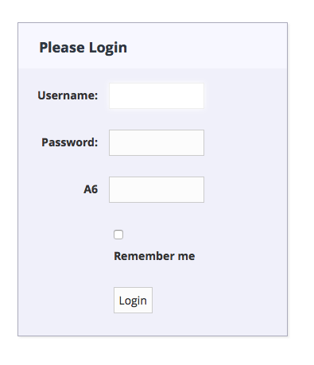

Grails Spring Security Core Plugin Custom Authentication
Shows how to create a custom authentication with Spring Security Core Plugin
Authors: Sergio del Amo
Grails Version: 4
1 Grails Training
Grails Training - Developed and delivered by the folks who created and actively maintain the Grails framework!.
2 Getting Started
In this guide, you are going to write a custom authentication mechanism. Spring Security Core Plugin allows for a significant degree of customization which we are going to explore next.
2.1 What you will need
To complete this guide, you will need the following:
-
Some time on your hands
-
A decent text editor or IDE
-
JDK 11 or greater installed with
JAVA_HOMEconfigured appropriately
2.2 How to complete the guide
To get started do the following:
-
Download and unzip the source
or
-
Clone the Git repository:
git clone https://github.com/grails-guides/grails-spring-security-core-plugin-custom-authentication.git
The Grails guides repositories contain two folders:
-
initialInitial project. Often a simple Grails app with some additional code to give you a head-start. -
completeA completed example. It is the result of working through the steps presented by the guide and applying those changes to theinitialfolder.
To complete the guide, go to the initial folder
-
cdintograils-guides/grails-spring-security-core-plugin-custom-authentication/initial
and follow the instructions in the next sections.
You can go right to the completed example if you cd into grails-guides/grails-spring-security-core-plugin-custom-authentication/complete
|
3 Writing the Application
When we talk about two-factor authentication we often think about two things:
-
Something the user knows (e.g. username/password)
-
Something the user has.
For the latter, in Spain, banks often issue a Coordinate Card
Users need to enter username, password and a coordinate to login into their bank.
We are going to customize Spring Security Core Plugin to achieve such a login in a Grails 3 application.
First, We need to add Spring Security Core Plugin as a dependency:
link:../snippets/build.gradle[role=include]3.1 Domain Classes
Use s2-quickstart to generate the default Spring Security Core domain classes:
grails s2-quickstart demo User Roles2-quickstart script generates three domain classes; User, Role and UserRole. It is recommended to
move the password encoding logic outside of the domain class.
| Service injection in GORM entities is disabled by default since Grails 3.2.8. |
Each user is going to have a coordinate card. Thus we have modified the User domain class slightly:
link:../snippets/grails-app/domain/demo/User.groovy[role=include]link:../snippets/grails-app/domain/demo/SecurityCoordinate.groovy[role=include]3.2 Secured Controller
This controller is restricted to users with role ROLE_CLIENT
link:../snippets/grails-app/controllers/demo/BankController.groovy[role=include]3.3 Seed Data
We are going to populate our database with some seed data:
link:../snippets/grails-app/services/demo/RoleService.groovy[role=include]link:../snippets/grails-app/services/demo/UserService.groovy[role=include]link:../snippets/grails-app/services/demo/UserRoleService.groovy[role=include]link:../snippets/grails-app/init/demo/BootStrap.groovy[role=include]3.4 Custom Login Form
We override, both LoginController and auth.gsp, to display a random coordinate field each time the user is directed to the login form.
link:../snippets/grails-app/controllers/demo/LoginController.groovy[role=include]We have a list of valid positions as a configuration list in application.yml
link:../snippets/grails-app/conf/application.yml[role=include]The overriden GSP file displays the coordinate position input field

link:../snippets/grails-app/views/login/auth.gsp[role=include]3.5 Authentication Provider
Create a Custom AuthenticationProvider implementation. That it is a class which implements:
org.springframework.security.authentication.AuthenticationProvider
You will normally:
-
Either extend one that it is similar. For example,
DaoAuthenticationProviderwhich comes with the plugin.
org.springframework.security.authentication.dao.DaoAuthenticationProvider
-
Or directly implement the
AuthenticationProviderinterface
In this guide, we choose the first option.
However, Let’s start with the artifact we are going to use to validate the coordinate supplied by the user. In this guide, we use a Grails Service.
link:../snippets/src/main/groovy/demo/CoordinateValidator.groovy[role=include]link:../snippets/grails-app/services/demo/CoordinateValidatorService.groovy[role=include]We are going to inject this service as a bean in our custom authentication provider. In order to do that, we register the bean first
link:../snippets/grails-app/conf/spring/resources.groovy[role=include]We extend the DaoAuthenticationProvider to add our extra check.
link:../snippets/src/main/groovy/demo/TwoFactorAuthenticationProvider.groovy[role=include]We need to register our custom AuthenticationProvider as a bean.
link:../snippets/grails-app/conf/spring/resources.groovy[role=include]Moreover, we want to use our TwoFactorAuthenticationProvider instead of DaoAuthenticationProvider.
In order to do that, we define the providers which should be use to authenticate:
link:../snippets/grails-app/conf/application.groovy[role=include]3.6 Authentication
In order to create a custom authentication, we often need a custom Authentication.
org.springframework.security.core.Authentication
Authentication represents the token for an authentication request or an authenticated principal once the request has been processed by the method:
AuthenticationManager.authenticate(Authentication)
This generally means:
-
Either extend an existing implementation.
org.springframework.security.authentication.UsernamePasswordAuthenticationToken
-
Or directly implement the interface
Authentication
What we are trying to achieve is an extension of the common username/password functionality offered
already by the plugin. We don’t need a custom authentication object. Instead, we are going to use
the UsernamePasswordAuthenticationToken object and place in the details property our custom information; the coordinate.
3.7 Filter
If you are using a custom Authentication, you may need to create a filter.
That means coding a custom java.servlet.Filter implementation.
You have several options:
-
Extend
GenericFilterBean
org.springframework.web.filter.GenericFilterBean
-
Extend a similar filter e.g.
UsernamePasswordAuthenticationFilter
org.springframework.security.web.authentication.UsernamePasswordAuthenticationFilter
-
Directly implement the interface
For this guide, we don’t need to create a custom filter. Instead, we are using the UsernamePasswordAuthenticationFilter
and overriding the authenticationDetailsSource bean used by that filter.
link:../snippets/grails-app/conf/spring/resources.groovy[role=include]link:../snippets/src/main/groovy/demo/TwoFactorAuthenticationDetailsSource.groovy[role=include]link:../snippets/src/main/groovy/demo/TwoFactorAuthenticationDetails.groovy[role=include]3.8 Functional Test
Grails integrate seamlessly with Geb. Thus it is easy to develop a functional test for our custom login form.
link:../snippets/src/integration-test/groovy/demo/BankControllerSpec.groovy[role=include]link:../snippets/src/integration-test/groovy/demo/LoginPage.groovy[role=include]4 Running the Application
To run the tests:
./grailsw
grails> test-app
grails> open test-report